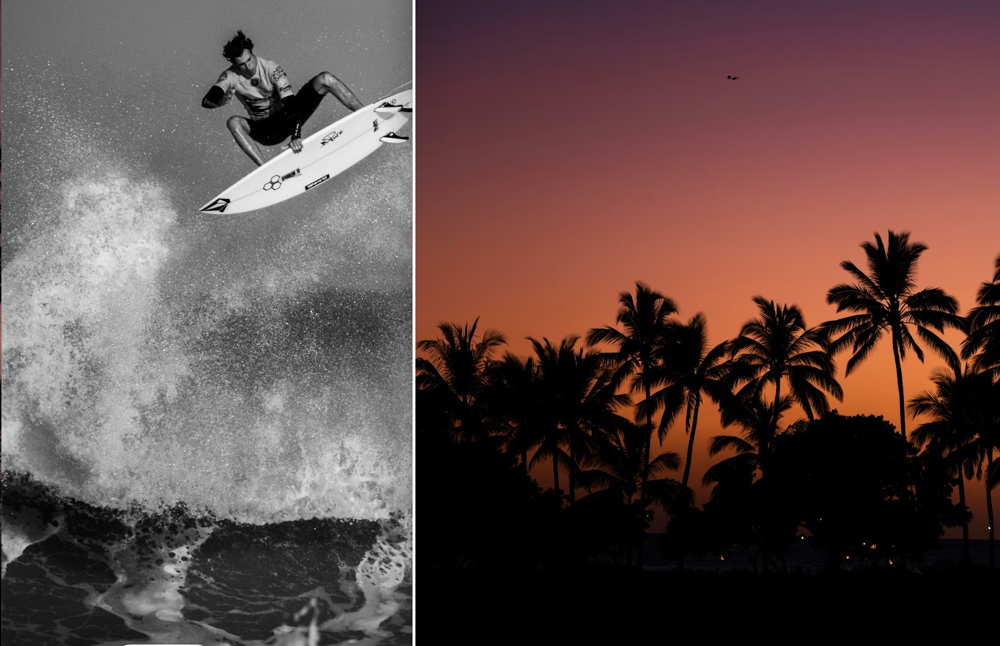
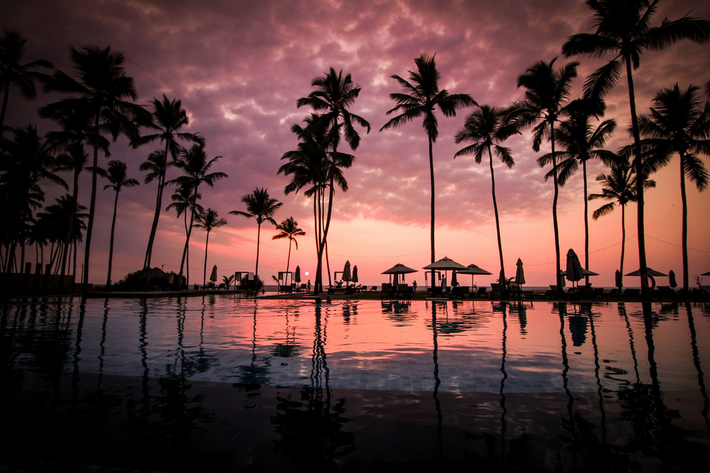
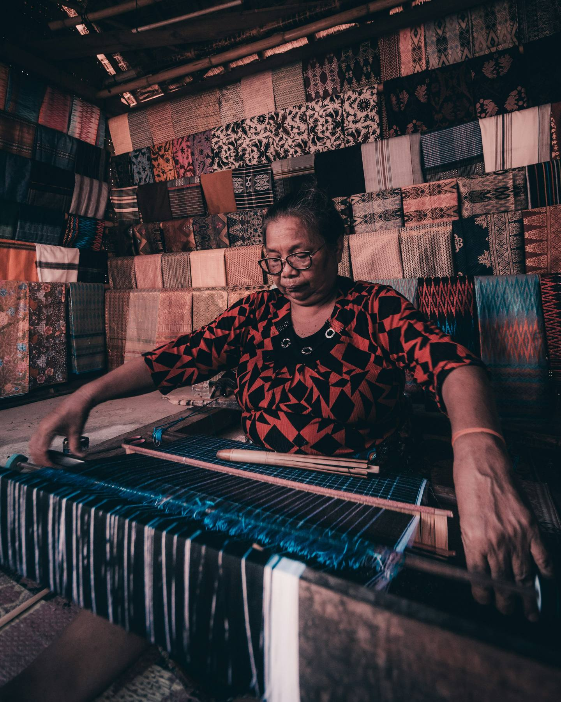
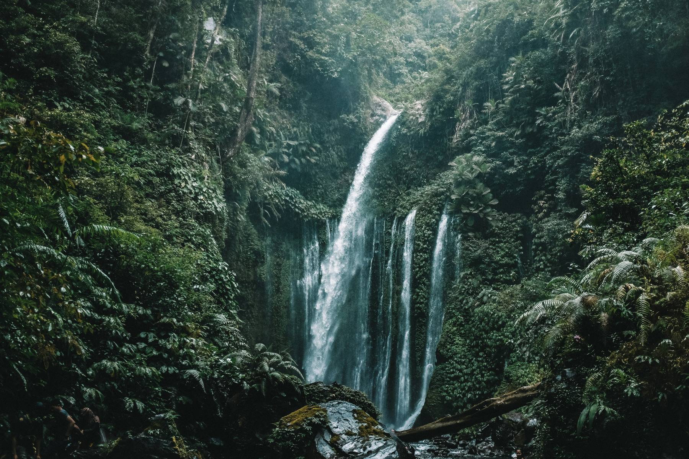
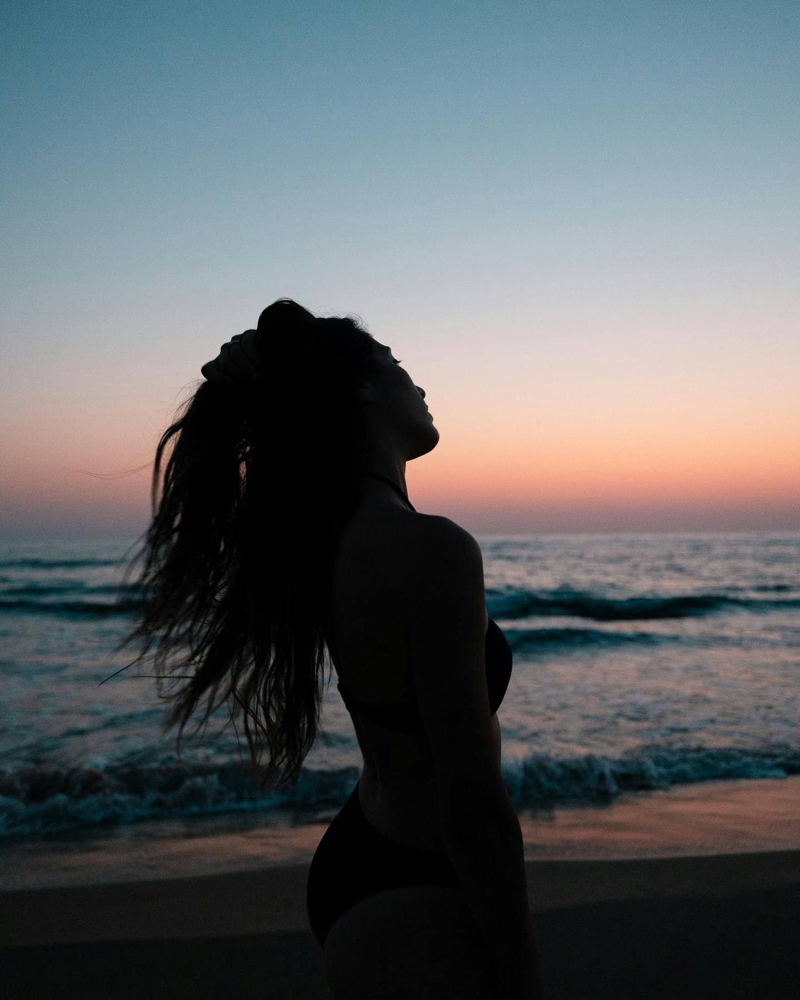
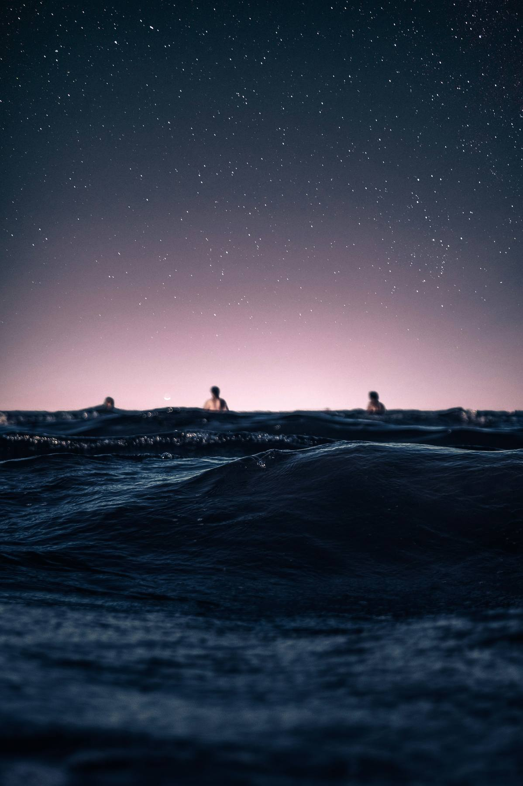
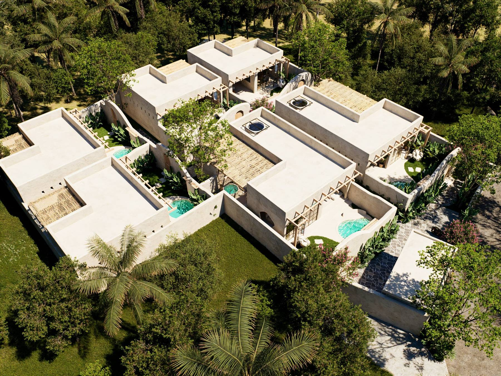
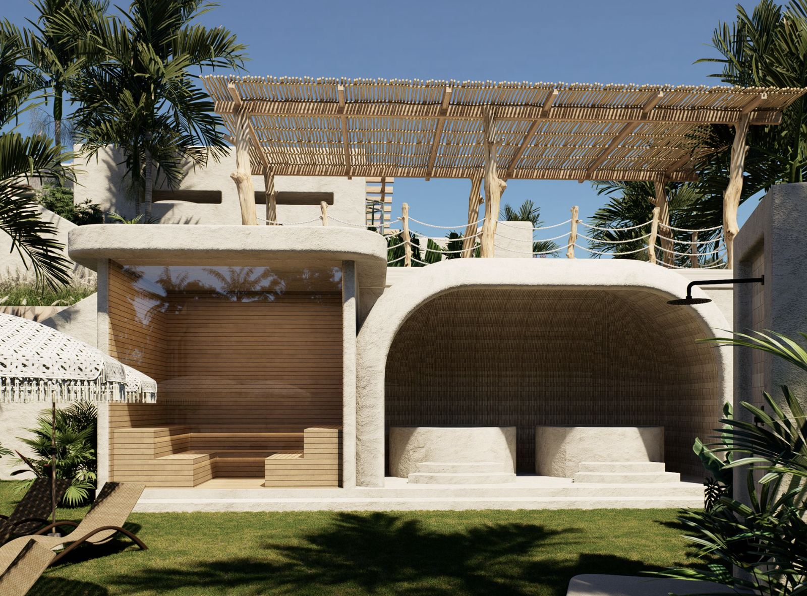
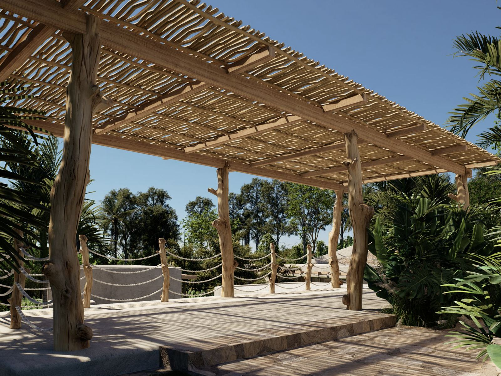
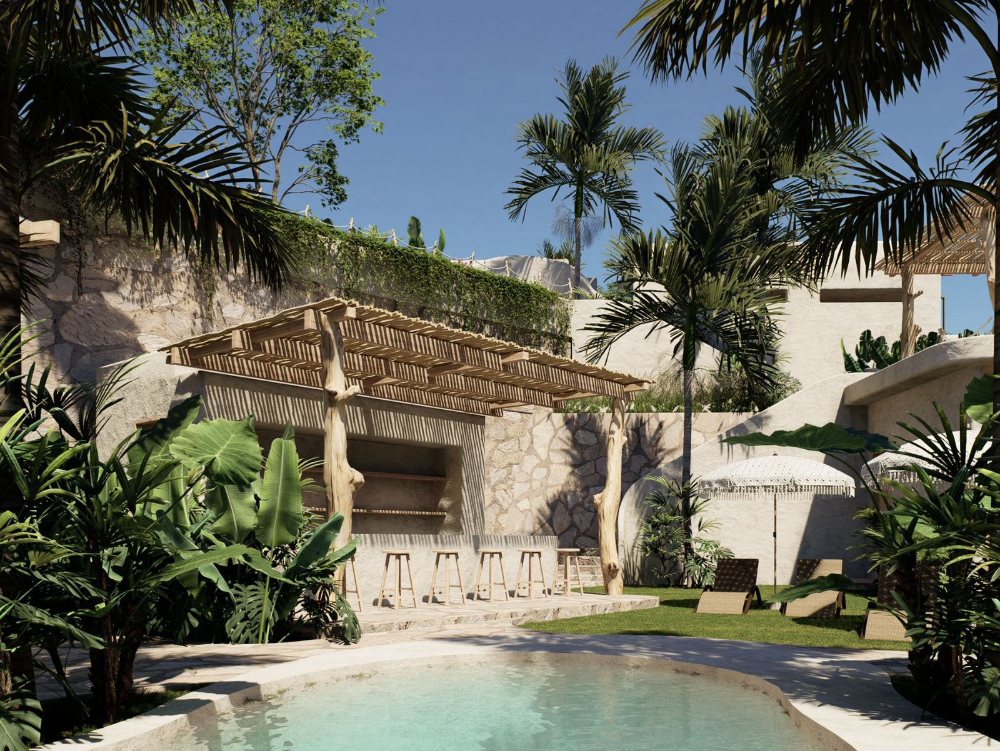

Experiences | Casa Brava Boutique Hotel
The same rhythm, moment by moment
Water, sand, after-dinner conversation, silence: the same gestures that define a day at Casa Brava, seen in fragments.


Its name comes from subhanallah: a honeycomb motif of hexagons, woven only by elderly women in an almost meditative state. They say it is the cloth that chooses its owner, not the other way round.

Ragi, requirement; genep, complete: the motif that marks when someone is ready for a journey. It is woven as a pair with Bintang Empat as an engagement gift. Two cloths that are only separated on the wedding day.

The whole island waiting to be explored: beaches, markets, the Kuta Mandalika coast. It is the only one of the five motifs that looks outside the villa.

The four stars that mark the Sasak agricultural calendar signal when the season changes. Symbolism associated with orientation and hope.

Shadows tell a story. In tenun, this shadow theatre represents the struggle between good and evil. A balance between the forces of nature and human beings.

In your Casa Brava villa
Each pool is born as a natural extension of its villa: a private, sheltered and calm space. The architecture embraces the landscape so that pool, garden and villa merge into a single refuge. Here luxury doesn't need to be noticed; it is discovered in the silence, in the intimacy and in the feeling that this whole place exists only for you.
Sauna, cold plunge and yoga among palm trees
A shared wellness area with sauna, ice bath and an elevated pergola for practising yoga at sunrise. On the other side of the shared pool, a stone and wood bar to close the day.
-

Sauna and ice bath -

Yoga pergola -

Poolside bar


Everything here happens a little slower
The light changes, the conversation goes on and someone pours another drink. There is no rush, no schedule to interrupt the moment. Just the pleasure of staying a little longer.
The Kuta we only show our own
All of this starts right outside Casa Brava, in Kuta. No excursions two hours from the villa, nothing chosen at random. It's what we'd tell a friend, with the same care we put into every villa.
Coast & Territory
-
BeachApprox. 15 min from Casa Brava
Kuta Mandalika
The bay that gives this coast its name. We prefer it late in the day, when the stone viewpoint fills with long shadows.
Read more -
BeachApprox. 20 min
Mawun
The same water as Kuta, with fewer people and a curve of hills wrapping around it.
-
BeachApprox. 20 min
Tanjung Aan
Two bays stitched together by sugar-fine sand. One of the few shores where the sea asks nothing of you, just float.
Read more -
Beach · Low tideApprox. 20 min from Casa Brava
Batu Payung
The rock that gives the beach its name rises alone from the water. You can only cross on foot when the tide is out.
Read more -
Viewpoint · SunsetApprox. 15-20 min from Casa Brava
Bukit Merese
The best sunset in the area: a short walk up to a ridge overlooking the whole bay.
Read more -
Waterfall · Full dayApprox. 1.5-2 h from Casa Brava
Benang Kelambu waterfalls
The nearest real waterfalls are still far away. Worth it, but only with a truly free day.
Read more -
IslandsDeparture from Tawun harbour, approx. 45 min-1 h from Casa Brava
The secret Gilis
Nanggu, Sudak and Kedis, three tiny islands in the southwest. Much closer than the famous Gilis in the north.
-
Islands · Long dayApprox. 2-2.5 h to the departure point, in the north
Trawangan, Meno and Air
The Gilis everyone knows, for good reason: turquoise water and the famous motorbike-free pace. Departure from the north.
Surf & Snorkel
-
Surf · All levelsApprox. 5-10 min from Casa Brava
Seger and Gerupuk
The closest and friendliest waves in the area. This is where you learn to surf properly.
-
Surf · BeginnersApprox. 35-40 min from Casa Brava
Selong Belanak
The beach where we recommend your first real lesson: gentle break, sand instead of rock, a bottom that forgives the first wipeouts.
-
Surf · AdvancedApprox. 20-30 min from Casa Brava
Mawi
One of the most serious waves in the south, with strong currents when a big swell comes in. Only if you already surf confidently.
-
Snorkel · Secret islandsDeparture from Tawun harbour
The islands nobody else visits
Private boat to three tiny islands —Nanggu, Sudak and Kedis— each with its own reef.
Via GetYourGuide Book -
Surf · BeginnersA few minutes from Casa Brava
Your first wave, no rush
The most generous wave in the south: sand instead of rock, a slow break, an instructor who corrects your stance from the very first mistake.
Via GetYourGuide Book
Table & Café
-
RestaurantApprox. 5 min from Casa Brava
SeaSalt
The only bistro right on Kuta beach: fish of the day, unpretentious, a good table after surfing.
Official Instagram Discover the restaurant -
Restaurant · DessertsApprox. 10 min from Casa Brava
Le Too Much
French and Mediterranean cuisine in a European-feeling bamboo hut, for when the craving is chocolate cake.
Official website See menu -
CaféApprox. 10 min from Casa Brava
Milk Espresso
Real coffee, served by people who know coffee. By day it's half of Kuta's work desk; at night, the terrace moves up to the rooftop.
Official Instagram Discover the café -
Beach ClubApprox. 10-15 min from Casa Brava
Mandalika Beach Club
Infinity pool at beach level, with plenty of loungers to stay all afternoon. No entrance fee.
Official Instagram Discover the beach club -
Café · BreakfastApprox. 10 min from Casa Brava
Guru
Open garden among palm trees and low sofas, with specialty coffee and unhurried breakfasts. The one we always recommend.
Official Instagram Discover the café
Wellness
-
YogaApprox. 10 min from Casa Brava
Shanti Yoga Lombok
Open classes for all levels among tropical gardens, inside Kuta Mandalika itself.
-
Spa · Hot-cold contrastApprox. 10 min from Casa Brava
Rascals Wellness Room
Sauna, two ice baths and a magnesium pool in an adults-only boutique.
Read more -
Spa · At your villaApprox. 10 min from Casa Brava (or at your villa)
Dayang Spa
Traditional Balinese massage, hands that know where the salt and sun have been all day. You can also ask them to come to the villa.